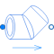

CurvedBendCurved bend flow model |

|
Diagram
{kind=link}
Information
This information is part of the Modelica Standard Library maintained by the Modelica Association.
This component models a curved bend in the overall flow regime for incompressible and single-phase fluid flow through circular cross sectional area considering surface roughness. It is expected that also compressible fluid flow can be handled up to about Ma = 0.3. It is assumed that neither mass nor energy is stored in this component. In the model basically a function is called to compute the mass flow rate as a function of pressure loss for a curved bend. Also the inverse of this function is defined, and a tool might use this inverse function instead, in order to avoid the solution of a nonlinear equation.
The details of the model are described in the documentation of the underlying function.
Parameters (7)
| allowFlowReversal |
Value: system.allowFlowReversal Type: Boolean Description: = true to allow flow reversal, false restricts to design direction (port_a -> port_b) |
|---|---|
| dp_start |
Value: 0.01 * system.p_start Type: AbsolutePressure (Pa) Description: Guess value of dp = port_a.p - port_b.p |
| m_flow_start |
Value: system.m_flow_start Type: MassFlowRate (kg/s) Description: Guess value of m_flow = port_a.m_flow |
| m_flow_small |
Value: if system.use_eps_Re then system.eps_m_flow * system.m_flow_nominal else system.m_flow_small Type: MassFlowRate (kg/s) Description: Small mass flow rate for regularization of zero flow |
| show_T |
Value: true Type: Boolean Description: = true, if temperatures at port_a and port_b are computed |
| show_V_flow |
Value: true Type: Boolean Description: = true, if volume flow rate at inflowing port is computed |
| geometry |
Value: Type: Geometry Description: Geometry of curved bend |
Connectors (2)
| port_a |
Type: FluidPort_a Description: Fluid connector a (positive design flow direction is from port_a to port_b) |
|
|---|---|---|
| port_b |
Type: FluidPort_b Description: Fluid connector b (positive design flow direction is from port_a to port_b) |
Components (5)
| system |
Type: System Description: System wide properties |
|
|---|---|---|
| state_a |
Type: ThermodynamicState Description: state for medium inflowing through port_a |
|
| state_b |
Type: ThermodynamicState Description: state for medium inflowing through port_b |
|
| state_dp_small |
Type: ThermodynamicState Description: Medium state to compute dp_small |
|
| geometry |
Type: Geometry Description: Geometry of curved bend |